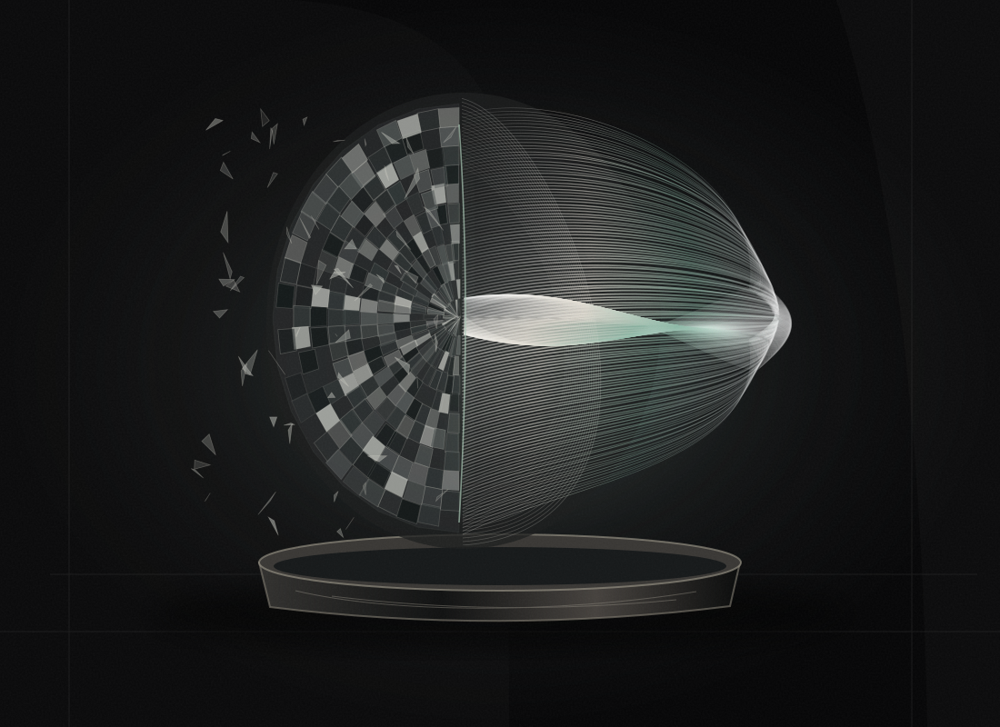

Define
Freeze the parent model, metric, deadline and conditions.
Post a measurable model failure.
Compete to fix it. Verify the improvement.

Freeze the parent model, metric, deadline and conditions.
Independent builders submit bounded model updates.
The named evaluator tests every admitted fix on equal terms.
A verified eligible winner can receive the escrowed bounty.
No invented payouts. No unverifiable accuracy claims. Inspect the original model, the signed artifacts and the rules used to pick a winner.
Loading the signed run evidence…
Inspect evaluation & model passportBrowse the actual recorded bounty. Inspect every candidate, the frozen rules, the artifact boundary and the evaluator's signed receipt.
Open the evidence consoleOnly real run data appears here.
The working proof uses actual CPU training. Worker keys stay on your machine. No paid API or GPU is necessary for this example.
The named evaluator decides model quality. Hashes identify exact bytes, not scientific truth. Our interface makes those boundaries explicit.
The evaluator scores models and authorizes settlement. This is not decentralized ML consensus.
The public Digits evaluation split is reproducible, not a secret enterprise anti-cheating set.
The Solana escrow program is locally tested. No completed live Devnet payout is claimed.
At the deadline, the evaluator compares registered candidates against the same frozen baseline and held-out set. Observed improvement must meet the bounty threshold and a one-sided, multiple-candidate-adjusted paired-bootstrap lower bound must be positive. The statistics are approximate under IID assumptions, and do not eliminate leakage or selection bias across repeated rounds.